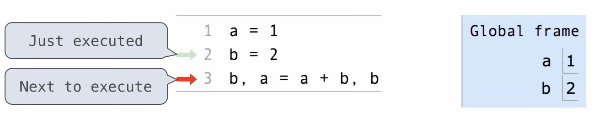

Functions
Table of Contents
1. Assignment
An assignment statement requires a name on the left side of the assignment operator, =, and an expression on the right side: e.g. radius = 10. We can then use this name in other expressions.
We can also assign multiple names to multiple expressions at the same time. For example, we can write:
area, circ = pi * radius * radius, 2 * pi * radius
We can also use the assignment operator to give names to functions. For example, we can set the name of a built-in function to something else, like f = max, which sets the name f to the built-in function max. Now, we can write f(1, 2, 3) to do the same thing as max(1, 2, 3).
If we set max to something else, like max = 3, then we can max is no longer set to the built-in function and running max(1, 2, 3) will throw an error. However, we can fix this by doing max = f, which sets max back to the built-in function.
2. User-Defined Functions
We can also define our own functions in Python. For example:
def square(x):
return mul(x, x)
We can now use this user-defined function exactly as we would use a built-in function. A function differs from a name as it evaluates the defined expression every time you call it.
3. Environment Diagrams
Environment diagrams visualize the interpreter's process. There is code on the left with statements and expressions, with the arrows indicating evaluation order. On the right we have frames, where we keep track of names bound to values:
